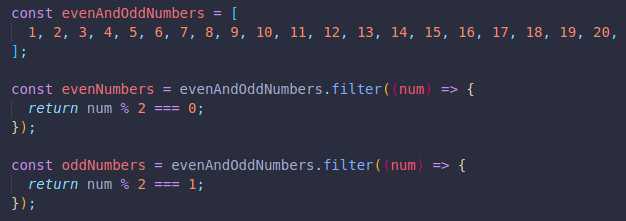

This method helps us create a new array with all items that pass the provided function's test.
Here we have a mix of even and odd numbers.
We've created a new constant variable to save all even numbers, and another for all odd numbers.
This new constant will ONLY return the items that match the condition we're checking for.
The original array is not changed, instead we have two new arrays plus the original one.
A few more examples.
And with object arrays.
We can extract the name of each country too if we want. We can return an array of strings instead of returning an array of objects.